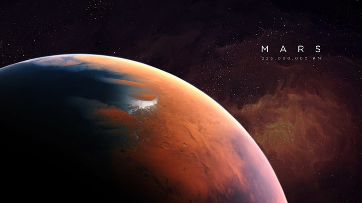
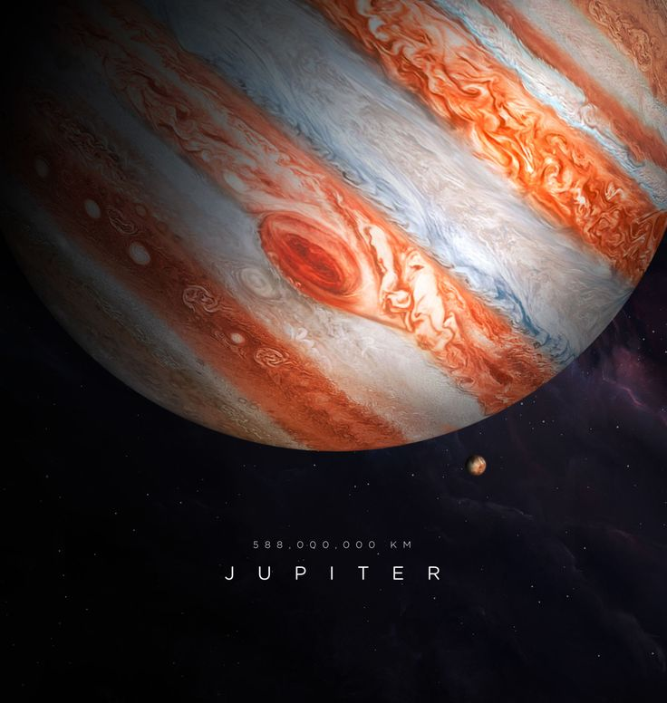
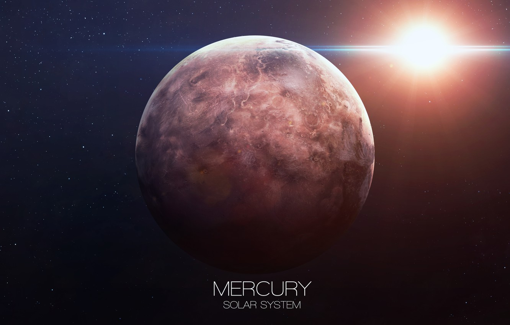
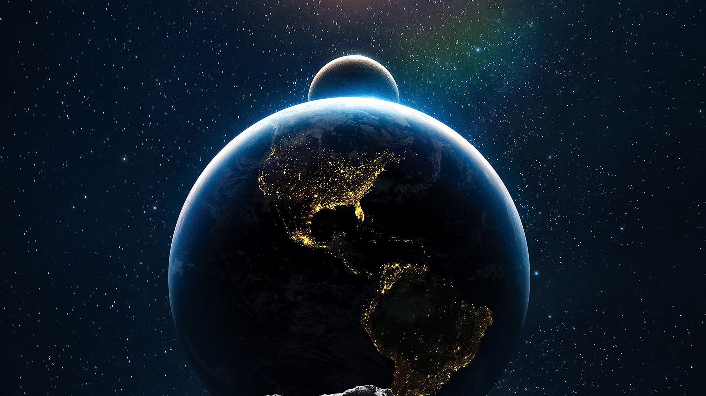
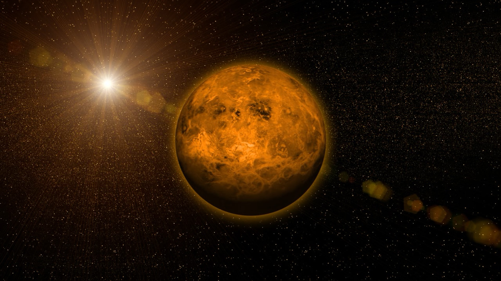

Five things you didn't know about our Solar System
Some of these facts are absolutely out of this world!
The whole of Mars is as cold as the South Pole
If you’re travelling to Mars anytime soon, be sure to bring your big coat. Its average temperature is roughly -60°C, the same as the South Pole (minus the penguins). Some scientists, in the hopes of making it more habitable, have suggested ways in which we could make Mars warmer. One of these ideas is to build giant mirrors that will reflect the Sun's rays, and kick-start some speedy Martian warming.

Jupiter’s largest moon has a salty ocean that contains more water than on Earth
Forget holidays in the Mediterranean. If you want vast ocean views, Jupiter’s biggest moon Ganymede is the place to be. The moon is larger than Mercury and would be classed as a planet if it were orbiting the Sun rather than Jupiter.

Mercury takes roughly three Earth months to orbit the Sun
In three months you could write a book, pass your driving test or learn basic guitar. It’s also the amount of time it takes Mercury to travel around the Sun. It’s the shortest orbit in the Solar System, because Mercury is the closest planet to the Sun. So, next time someone asks you when you’ll get around to mowing the lawn, tell them it’ll be in roughly one Mercurian year.

It would take 100 times longer to travel around the Sun than the Earth
Long haul flights to the other side of the world can be gruelling, but it’s nothing compared to how long it would take to fly round the Sun. To go on this trip of a lifetime, you’d have to prepare yourself for a journey of 206 days. Let’s hope there are places to stop to refuel along the way.

A day is longer than a year on Venus
Long haul flights to the other side of the world can be gruelling, but it’s nothing compared to how long it would take to fly round the Sun. To go on this trip of a lifetime, you’d have to prepare yourself for a journey of 206 days. Let’s hope there are places to stop to refuel along the way.

{kind=link}